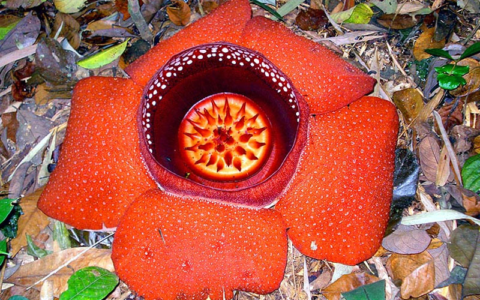

ดอกผุด

ดอกไม้ประจำจังหวัดสุราษฎร์ธานี คือ ดอกบัวผุด (Rafflesia kerrii) ซึ่งเป็นพืชป่าหายาก พบได้ในป่าดิบชื้นทางภาคใต้ของประเทศไทยโดยเฉพาะในพื้นที่จังหวัดสุราษฎร์ธานี
ดอกบัวผุดมีลักษณะเด่นคือมีขนาดใหญ่ สีแดงน้ำตาล ลวดลายเป็นจุด ไม่มีลำต้น ใบ หรือรากที่แท้จริง ดอกจะบานอยู่ติดพื้นดิน และมีกลิ่นคล้ายเนื้อเน่า เพื่อดึงดูดแมลงมาช่วยผสมเกสร
ดอกบัวผุดได้รับเลือกให้เป็นดอกไม้ประจำจังหวัดสุราษฎร์ธานี เนื่องจากเป็นพืชที่มีเอกลักษณ์และหายาก สะท้อนถึงความอุดมสมบูรณ์ของทรัพยากรธรรมชาติและผืนป่าของจังหวัด
อีกทั้งยังเป็นสัญลักษณ์ด้านการอนุรักษ์ธรรมชาติที่สำคัญของ